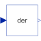
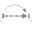
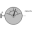
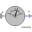
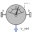

DerDerivative of input (= analytic differentiations) |

|
Information
This information is part of the Modelica Standard Library maintained by the Modelica Association.
Defines that the output y is the derivative of the input u. Note, that Modelica.Blocks.Continuous.Derivative computes the derivative in an approximate sense, where as this block computes the derivative exactly. This requires that the input u is differentiated by the Modelica translator, if this derivative is not yet present in the model.
Connectors (2)
| u |
Type: RealInput Description: Connector of Real input signal |
|
|---|---|---|
| y |
Type: RealOutput Description: Connector of Real output signal |
Used in Examples (2)
|
Modelica.Blocks.Examples Demonstrates the use of low pass filters to determine derivatives of filters |
|
|
Modelica.Blocks.Examples Demonstrate usage of Nonlinear.SlewRateLimiter |
Used in Components (5)
|  |
Modelica.Mechanics.MultiBody.Joints Free motion joint with scalar initialization and state selection (6 degrees-of-freedom, 12 potential states) |
|  |
Modelica.Mechanics.MultiBody.Sensors Measure absolute kinematic quantities of frame connector |
|
Modelica.Mechanics.MultiBody.Sensors Measure relative kinematic quantities between two frame connectors |
|
|  |
Modelica.Mechanics.MultiBody.Sensors Measure absolute velocity vector of origin of frame connector |
|  |
Modelica.Mechanics.MultiBody.Sensors Measure relative velocity vector between the origins of two frame connectors |